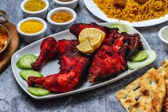

I was born and raised up in Tamilnadu, India. My native place is Telengana, India. I have completed my bachelor's in Electronics & Communication Engineering. I have 2.5 years of work experience in Accenture. Currently i am pursuing Masters in Applied Computer Science at Northwest Missouri State University.
The chicken is marinated with Indian spices and baked in a clay oven creating a juicy and a delicious flavour. If people are new to Indian food, Tandoori chicken is a must try dish. If people are into seafood, then Tandoori fish is the option to opt for.
